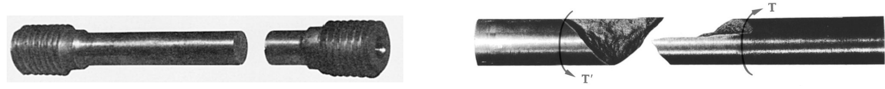

Previous Page: Axial Next Page: Bending
Torque
Torsion of shafts:
- Refers to the twisting of a specimen when it is loaded by couples (or moments) that produce rotation about the longitudinal axis.
- Applications: aircraft engines, car transmissions, bicycles, etc.
- Units: Force X distance [lb.in] or [N.m]
- Torques are vector quantities and may be represented as follows:


Assumptions:
- For circular shafts (hollow and solid): cross-sections remain plane and undistorted due to axisymmetric geometry
- i.e. while different cross sections have distinct angles of twist, each one of them rotates as a solid rigid slab
- Longitudinal lines twist into a helix that intersects the circular cross sections at equal angles
- For non-circular shafts,: cross-sections are distorted when subject to torsion
- Cross-sections warp and do not remain plane
- Linear and elastic deformation

Shear Stress and Strain
Geometry of Deformation:

The angle of twist increases as x increases. The twist rate is given by: \[\frac{d\phi}{dx} = \frac{\gamma}{\rho} = \frac{\gamma_{max}}{c}\]
Moving terms we get:
\[\gamma = \rho \frac{d\phi}{dx}\]
Hence, the shear strain ($\gamma$):
- is proportional to the angle of twist
- varies linearly with the distance from the axis of the shaft
- is maximum at the surface
Elastic shear stress - The Torsion Formula:
Geometry \[\gamma = \rho \frac{d\phi}{dx}\]
Hooke's Law \[\tau = G\gamma\]
From equilibrium: \[\frac{d\phi}{dx} = \frac{T}{GJ}\]
Elastic torsion formula: \[\tau = \frac{T\rho}{J}\]
Polar Moment of Inertia:
Solid Shaft (radius and diameter): \[J = \int_0^R{\rho^2dA} = \int_0^R{\rho^2(2\pi\rho d\rho)dA} =2\pi \int_0^R{\rho^3d\rho} = \frac{\pi R^4}{2} = \frac{\pi D^4}{32}\]
Hollow Shaft (inner radius and outer radius): \[J = \frac{\pi}{2}(R_o^4-R_i^4) = \frac{\pi}{32}(D_o^4-D_i^4)\]
Shear stress in the elastic range:
The shear stress varies linearly with the radial position in the section: \[\tau = \frac{T\rho}{J}\]

Note: shaft under torque T rotating at angular speed w transmits power: \[P=T\omega\]
Symmetry of shear stress: stress in axial planes


Shaft deformations:
From observation:
- The angle of twist of the shaft is proportional to the applied torque $\phi \propto T$
- The angle of twist of the shaft is proportional to the length $\phi \propto L$
- The angle of twist of the shaft decreases when the diameter of the shaft increases

Sign Convention
Torque and angle of twist follow the right hand rule sign convention. When positive, using the right hand, the thumb points outward from the shaft and the fingers will curl in the direction of the positive twist/torque.

Angle of twist in the elastic range:
\[\phi = \frac{TL}{GJ}\]
Torsional stiffness: \[k_T = \frac{GJ}{L}\]
Torsional flexibility: \[f_T = \frac{L}{GJ}\]
Inclined planes


Recall projected forces:
\[\sigma_n = \frac{P}{A_o}(\cos^2(\theta))\] \[\tau_{ns} = -\frac{P}{A_o}\sin(\theta)\cos(\theta)\]
Maximum normal stress at 90 degrees:

Maximum shear stress at 45 degrees:

A circular shaft under torsion develops PURE SHEAR on cross sections between longitudinal planes (the faces of element $a$ are parallel and perpendicular to the axis of the shaft)

\[\sigma_n = 2\tau_{max} \sin\theta \cos\theta = \tau_{max} \sin (2\theta)\] \[\tau_{ns} = \tau_{max}(\cos^2\theta - \sin^2\theta) = \tau_{max} \cos(2\theta)\]

Maximum normal stress at: \[\sigma_n = \tau_{max} = \frac{Tc}{J}\] \[\sigma_s = -\tau_{max} = -\frac{Tc}{J}\] \[\tau_{ns} = 0\]
Maximum shear stress at: \[\sigma_n = 0\] \[\sigma_s = 0\] \[\tau_{ns} = \tau_{max} = \frac{Tc}{J}\]
Types of material failure:
Ductile materials generally fail in shear

Axial loading – maximum shear stress at $45^o$ angle Torsion – maximum shear stress at $0^o$ angle
Brittle materials are weaker in tension than shear

Axial loading – maximum normal stress at $0^o$ angle Torsion – maximum normal stress at $45^o$ angle
Thin-walled hollow shafts

In general, the maximum shear stress is given by
\[\phi = \frac{TL}{GJ}\]
For thin-walled shafts: \[\tau_{max} = \frac{T}{2tA_m}\] where \[A_m = \pi R_{ave}^2\] \[R_{ave} = \frac{R_o + R_i}{2}\]
Note that is NOT the cross sectional area of the hollow shaft!